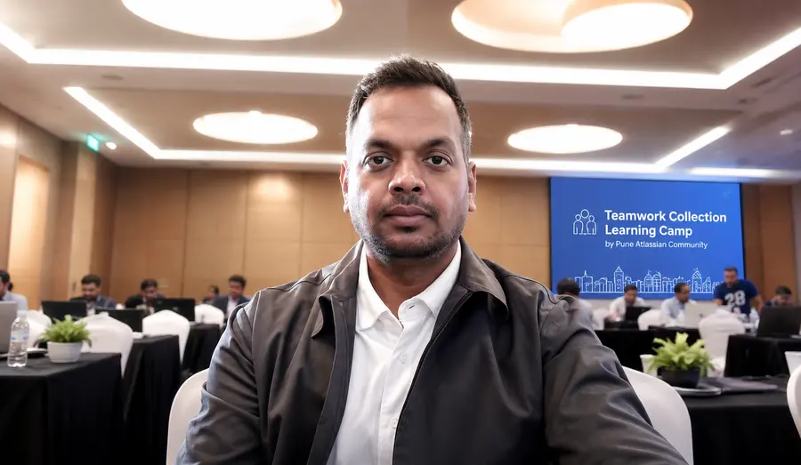

QE Leadership at Enterprise Scale
Building capable teams, scalable test strategies, and clear quality ownership across complex delivery programs.
Manager, E2E, Quality Engineering · Western Union · Pune
I'm Sandeep Singh, a Quality Engineering leader with 18+ years in digital QA, end-to-end testing and AI-driven automation. I help teams build quality into every layer of delivery, and I share what works in the free QE Playbook.
Career across
What I Do
A practical QE leader shaped by technology, people, and the responsibility to deliver well.
Building capable teams, scalable test strategies, and clear quality ownership across complex delivery programs.
Using modern automation and AI to improve test design, reduce repetitive effort, and sharpen engineering focus.
Deep experience across payments, digital journeys, enterprise risk, and quality practices shaped by customer trust.
Bringing engineering, product, business, and QE together to solve the right problem and deliver with confidence.
Main Attraction · Free
A growing collection of practical guides, training notes, and field-tested ideas from quality engineering, automation, AI, and platform work. Built to be searched, skimmed, and used.
Featured now
0About Me
18 years of building quality into how software is planned, built and shipped.
My journey in software quality spans over 18 years and reflects how the industry itself has changed — from mainframe testing, HP QTP, ALM and UFT to modern open-source frameworks such as Playwright, and from traditional QA practices to a complete Quality Engineering mindset.
I started as a test engineer and gradually discovered a deeper passion: building quality into every layer of software delivery. Today, as a Manager of End-to-End Testing in financial services, I lead high-performing QE teams and work closely with engineering and product leaders to create strategies that are scalable, risk-aware, and aligned with enterprise delivery goals.
My toolkit has grown with the industry — Playwright, Appium, SeeTest and BrowserStack for web and mobile coverage, with Jira and Confluence providing delivery visibility. I believe in using the right tool for the right problem. I now use AI to accelerate test design, improve processes, and reduce repetitive work so that teams can focus on meaningful defects, better application quality, and on-time delivery.
At my core, I am a solution provider. Whether I am bridging gaps between development and business, modernising a legacy testing pipeline, or coaching a team to think beyond test execution, my north star remains simple: quality delivered, on time, every time.
Away from the screen, football shapes how I think about leadership. I look at the system, the team balance, and whether it can win consistently rather than occasionally. I bring the same thinking to QE teams, while continuing to explore new tools and ideas that can help people work better. I enjoy connecting with technical leaders and QA/QE practitioners who are shaping the future of software quality.
Career Journey
From Quality Assurance to Quality Engineering - a career built on crafting quality.
Leading the end-to-end quality engineering function for digital financial products. Responsible for test strategy, team leadership, automation frameworks, and delivery governance in a global fintech environment. Champion of AI-driven testing approaches and a culture of continuous quality improvement.
Delivered quality engineering consulting for enterprise clients, leading test planning, execution, and automation initiatives. Worked across web, mobile, and API testing domains with cross-functional delivery teams.
Performed manual and automated testing for enterprise applications, contributing to test case design, defect management, and release validation cycles.
Contributed to software testing projects covering functional, regression, and system testing for enterprise clients.
Started the quality engineering journey at Infosys, Bhubaneswar — building foundational expertise in test planning, execution, and defect tracking across multiple project teams.
Expertise
A breadth of technical and leadership capabilities built over 18 years. The right tool for the right problem.

Teamwork Collection Learning Camp · PuneCommunity
I show up at the Atlassian Community in Pune, learn by doing, and turn each event into a practical guide anyone can use.
Credentials
Let's Connect
Whether you're looking to discuss quality engineering, AI in testing, or just want to say hello — I'm always happy to connect.